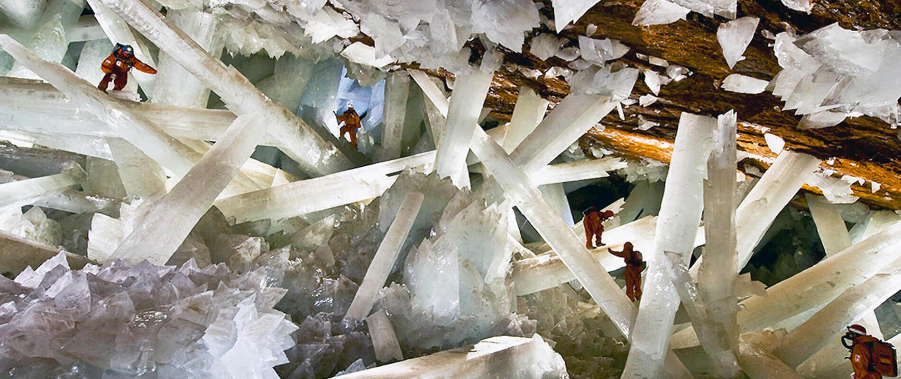
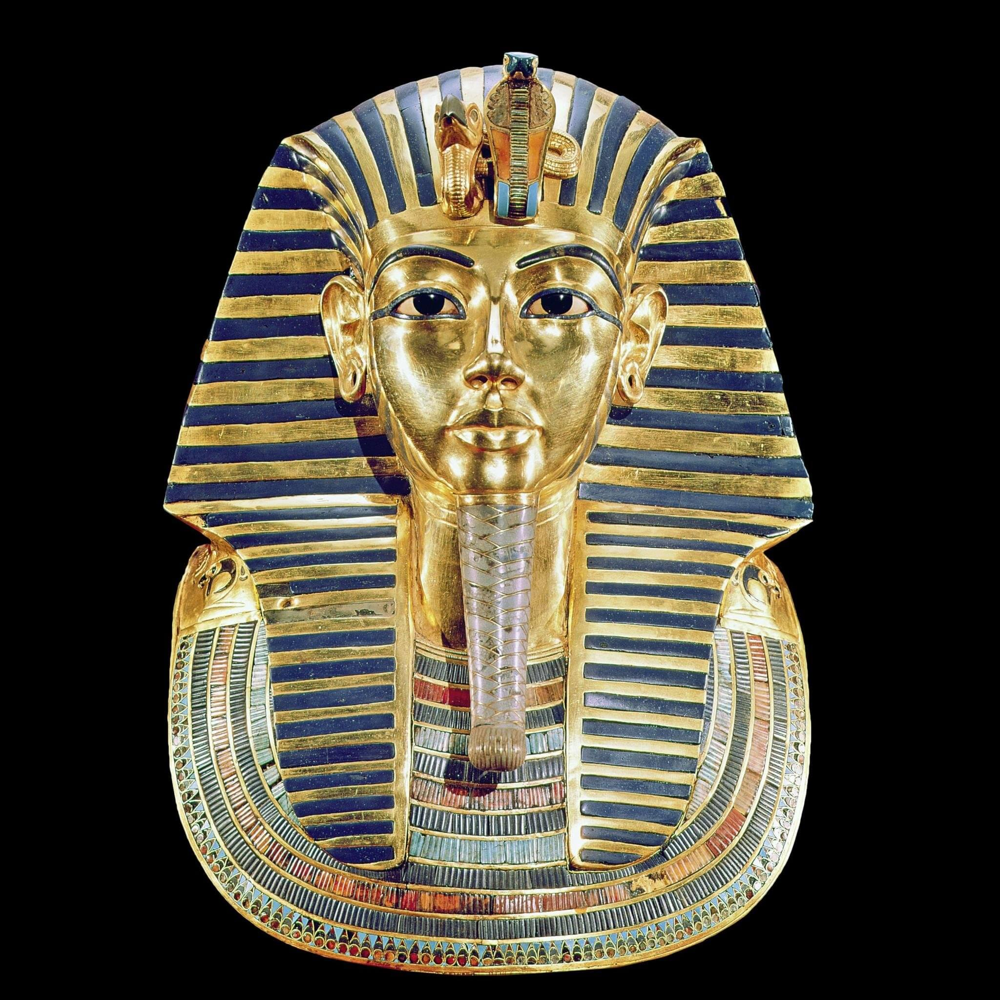
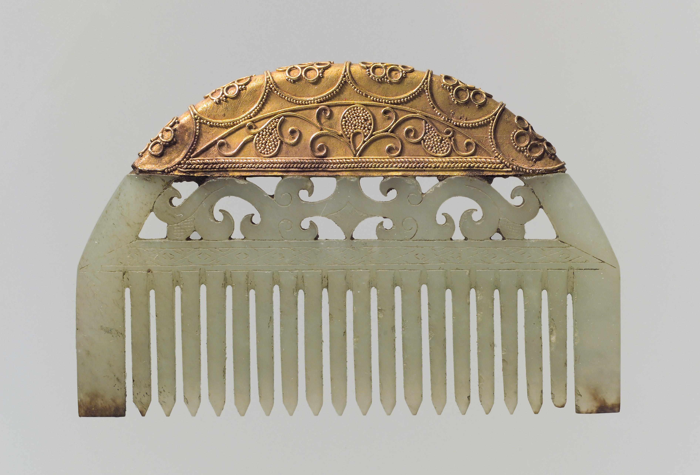
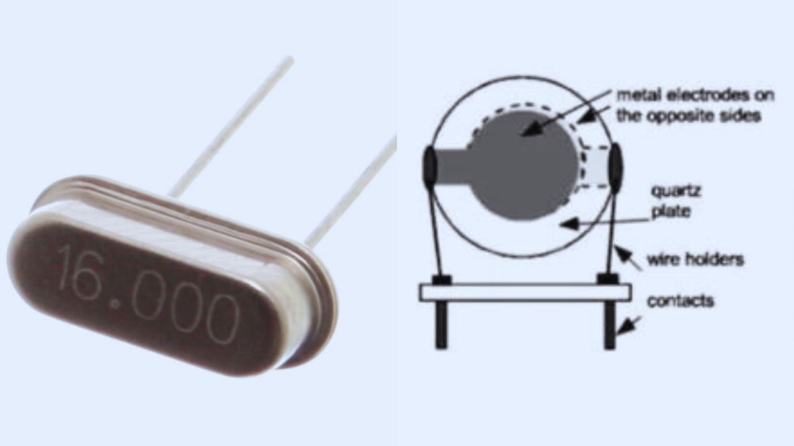

Crystals, the heart of the earth
Crystals, stones, gems, ore. They go by many names, but they are all minerals and metals, created in the core of the earth through extreme heat and pressure until the plate tectonics and volcanoes bring the different rock material up to the surface where we can find it.
One of nature’s biggest wounders is without a doubt Cueva de los Cristales (cave of crystals) in Mexico. Buried a thousand feet (300 meters) below Naica mountain in the Chihuahuan Desert, the cave was discovered by two miners excavating a new tunnel for the Industrias Peñoles company in 2000.

Giant crystals made of translucent gypsum measuring up to 36 feet (11 meters) long and weighing up to 55 tons. Because they were submerged in mineral-rich water with a very narrow, stable temperature range—around 136 degrees Fahrenheit (58 degrees Celsius), the crystals could grow undisturbed for millennials.Volcanic activity that began about 26 million years ago created Naica mountain and filled it with high-temperature anhydrite in water. Anhydrite is stable above 136 degrees Fahrenheit (58 degrees Celsius) but below that gypsum is the stable form so in the stable temperature the anhydrate crystalized into gypsum and slowly grew crystals. The cave is still very hot and humid so only a few visitors have been able to enter the cave with specialized suits, and only for short periods of time.
Our history with gemstones goes a long way back. One of the most famous instances is Tutankhamun's death mask dating back to 1324 BC.

It is made from gold but inlaid with Lapis lazuli, quartz, obsidian, carnelian, feldspar, turquoise, amazonite and other stones.But the use of precious stones date back even longer. Jade has had an important role in China's history and the earliest mentions in historical texts date back to 3600 BC. And Egypt has found archaeological evidence of lapis lazuli and amethyst jewelry that has been dated to 4000 BC

Comb, Eastern Han dynasty (25–220), China. Jade (nephrite) and gold.
Today gemstones still play a big part in our lives, the most common use is to wear them as jewelry, but we use them as decorations in our homes in different ways and the spiritual society frequently uses them. We also use gems and minerals in many of our everyday technology and appliances. Rubies were first used in lasers in the 1960s and are still used in dermatology. Quartz is used in radios, TVs, GPS systems among others where quartz oscillators are used.
